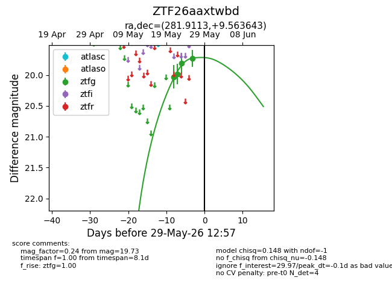
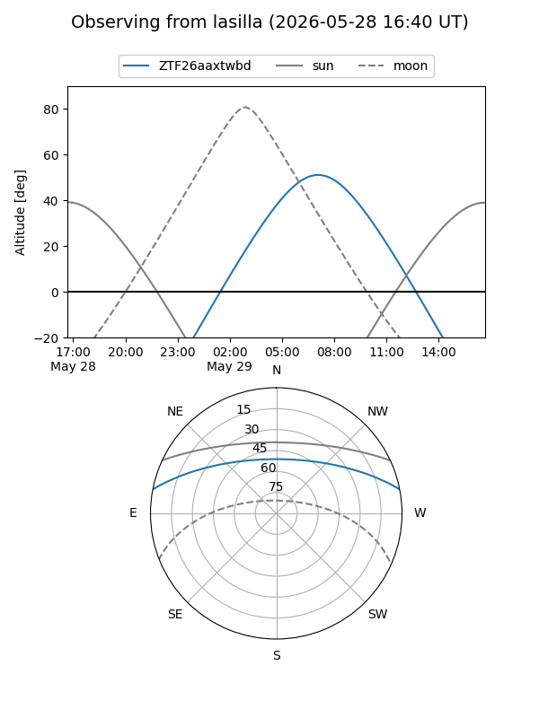
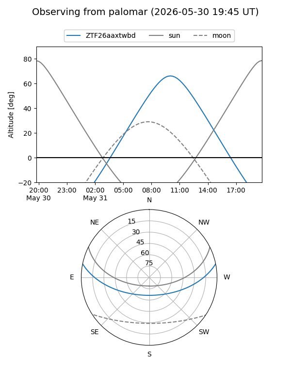
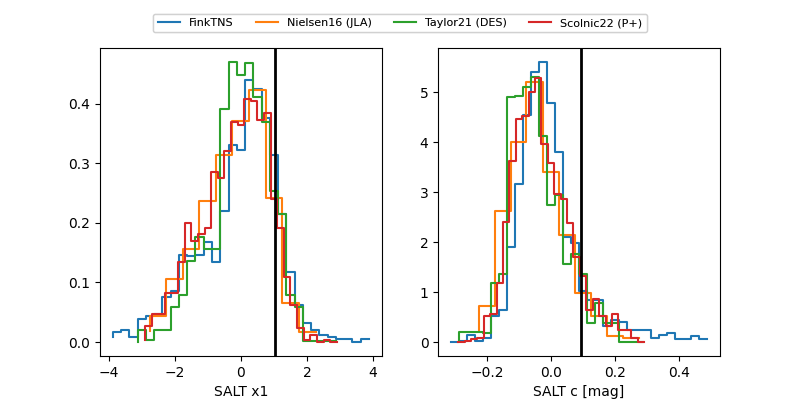

ZTF26aaxtwbd
Target ZTF26aaxtwbd at 2026-05-29 12:59
Aliases and brokers:
lsst-FINK: link
lsst-Lasair: link
lsst-ALeRCE: link
ztf-FINK: link
ztf-Lasair: link
ztf-ALeRCE: link
alt names
ZTF26aaxtwbd (ztf,fink_ztf)
Coordinates:
equatorial (ra, dec) = 281.9113,+9.56364
equatorial (HMS+DMS) = 18:47:38.71,+09:33:49.11
galactic (l, b) = (41.0376,+5.17982)
Flags:
Photometry:
last ztfg=19.73
4 ztfg detections
Lightcurve

Visibility


Additional plots
